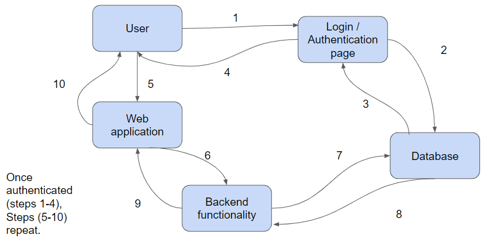
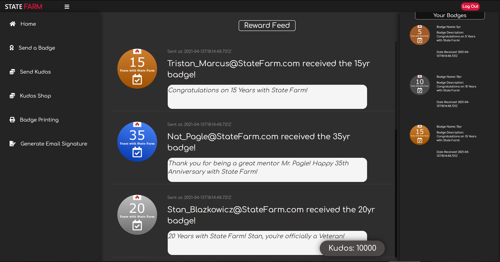
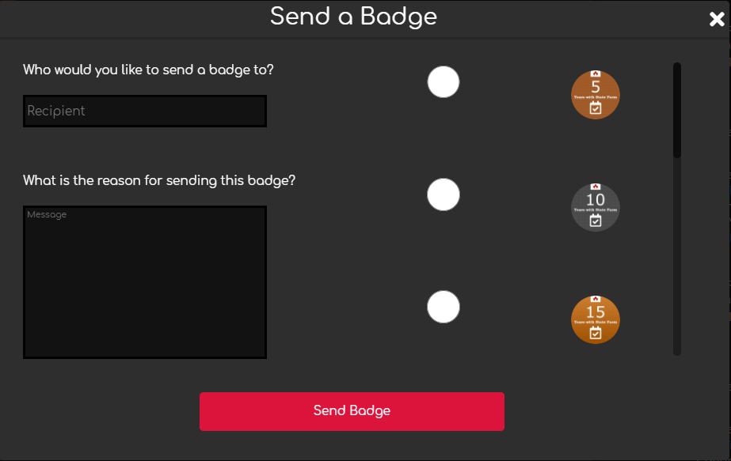

We envision a fast, secure, and easy to use internal social media web application.
This application will be similar to a video game reward system to encourage and motivate
State Farm® employees who are working virtually. The Skills/Knowledge Badging System would
allow employees to acknowledge and reward their coworkers with badges and Kudos which can be
shown off and redeemed for real world prizes. Our solution would fill the void of recognition
and social interaction that once existed in the State Farm® offices.
Technologies
Frontend - ReactJS
In relation to our project, React as a framework is perfect for several reasons.
Its component based structure will allow us to create a single page application
with little struggle. Additionally, React offers a wide enough variety of tools to
support our functionality as an internal social media. Integration of badges on the
front end will be simple and modular due to the embedded tools in React’s components.
Also, performance optimization tools are already implemented into React’s libraries
allowing for more development time rather than optimization. React also natively
supports NodeJS giving our team an advantage in integrating our project’s front and
back end.
Backend - (Express) NodeJS
We chose NodeJS since it can handle the concurrent
request handling efficiently better than others including Python. If our badging system
receives many requests at the same time, the incoming requests will get lined up and are
executed quickly and systematically. The Node.js is also known to be highly extensible,
which means that we can customize and further extend Node.js as per their requirements.
Although JavaScript does not have a well equipped and robust library system in comparison
to other programming languages, we could solve this problem by selecting python as a
supplement since python has lots of libraries. Also all the members of our team are familiar
with python and Javascript.
Database - MongoDB
We believe MongoDB is the perfect database we
could use for this web application. This is because MongoDB is easy to use. MongoDB
is more understandable and more clear to find what you are looking for than the other database
tools. MongoDB provides authentication analytics to manage real time data, push notifications,
file storage and web hosting. Moreover, MongoDB has service functions that can call with auth
context from the front-end, so it can easily tell the back-end code if a user logged in.
Lastly MongoDb was a great choice as our team was already familiarwith the tool.
PhotoShop - Gimp
We believe gimp will allow us to successfully create badges to deliver to State
Farm. Gimp will allow us the freedom and flexibility to design these badges with
ease and since it is a free application the team will not have to spend any money
from their own pocket. With the easy to learn and easy to navigate user interface,
we will use Gimp to create 20+ badges all around the same State Farm theme. Since it
is also open source we will be able to modify any code to better fit our needs
throughout the designing of these badges. We may also use Gimp for other designs
across our front end single page application such as logos, sprites, images, and more.
Using this application we will be able to save a large amount of time by bypassing the
learning curve of some other extensive graphic design applications while still being able
to come up with quality images, badges, and logos.
Version Control - Gimp
We believe Github will allow us to successfully manage our code.
Github’s easier deployment methods are a large factor to choose it.
It is also a widely used version control with the biggest community.
Github’s desktop applications also makes it easier to use and maintain
our project. It is also the most preferred and used among our team members
for its simplicity.
IDE - Visual Studio Code
The majority of our team worked in Visual Studio Code as it has a ton of extensions
that are easily added to the IDE that help write our code. We also went with this IDE
as the majority of the team already used this for other coding projects. Although any IDE
would have doen the trick.
System Architecture

Our Product
Interesting and Responsive GUI
The first component of our system is the homepage of our application.
This homepage will be broken up into three parts. The first part located on
the left-hand side is our tool bar where users can access all of our different
components in popup modals. The next part is located in the center and it is our
waterfall style feed where all badge information messages from every user is
displayed. The purpose of this is to add to the social media aspect of our
application making it similar to Facebook or Twitter. Our third part is located
on the right-hand side and is our user badge library. Here the users can see all
the badges they have earned. The goal of the homepage GUI is to allow users to
have an easy to use and navigate application, so our product is more enjoyable to
use.

Application Homepage
Account System with Access Restrictions
The next component of our application is the user authentication system.
The sole responsibility of this component is to allow users to create accounts
and provide an extra layer of security by forcing users to log in to their
accounts every time the application is opened. This is the only component that
will be separate from the single page application as we do not want to give
someone access to the application if they have not been authenticated. This
component will be hosted on the frontend and will speak directly to the database
to authenticate users. For more security we will be using a token authenticator.
For example when a user creates a new account a random unique token will be
generated for their account and every time they log in, the token will be compared
to the one in the database to authenticate them.
User Login Portal
Badge Delivery System (Send/Receive/Remove)
The next component of our application is the badge delivery system will be the main
component of our application. Its main job is to provide badges to the user when
they earn them. It is also responsible for displaying the badges earned by users
in the waterfall feed. A user will be able to see their badges on the front-end on
the right panel of the application, as well as the badges they can still earn.
Badges can also be sent to other users depending on the badge. This part of our
application will be hosted on the front-end but all the functionality will be
done on the back-end which will use the database.

Send a Badge Interface
Badge printing
The next component of our application is the badge printing model. The goal of
this component is to allow the user to access the PDF of every badge they have
earned so they can download, print and display their badges in the real world.
When a user chooses the badge printing model on our application the first thing
that will happen is a popup with all their earned badges will appear. They will
then select a badge then select the confirmation box. It will then open the badge
PDF in a new window for the user to do with it as they please. This component will
be hosted on the front-end and will use the back-end to parse the database for the
selected badges.
Print a Badge Interface
Internal Social Currency (Kudos)
The next component of our application is the Kudos system. This will be a
second way for users to earn rewards and recognition from our application.
This will work differently from the badges in the sense that Kudos will be
given out on the daily by coworkers for many different reasons. Kudos are
meant to be sent for smaller accomplishments where the badges are sent for
larger milestones. Our Kudos system will be responsible for the sending and
receiving of Kudos to every user. It will also be responsible for the Kudos
store where managers can set rewards and employees can redeem them. Like the
badge delivery system, the Kudos system will be hosted on the front end of the
application with all the functionality being done in the back-end with help from
the database. An important detail is that each user's store will be different
depending on what their team's manager sets for rewards.
The last component of our application is the email signature generator which
allows users to generate a customized email signature using their earned badges.
This will provide another way for the users to show off their accomplishments.
Unlike the other components, the majority of the email signature generator
functionality will take place on the front end. The only back-end use will be the
loading of the badges to be selected for the signature. We want to give our users
customizability by allowing them to choose the font, color, and order in which
they would like the parts of their signature to be displayed. Once a signature has
been generated it will be available to copy as a whole and saved by the user.